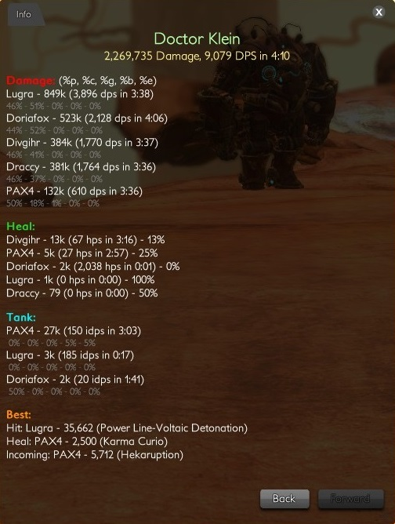

Enhanced Parser
The Secret World group fight information
THE SECRET WORLD - Enhanced Parser
Enhanced Parser - improved version of default parser with another looking,
bug fixes and minor changes.
This parser had been writen only for personal using, but many peoples ask to share
it and here it is.
Make sure you've configured all settings in ACT /Option tab using Instruction from the link below.
Useful links:
Default Parser with Instuctions and Troubleshooting can be found here:
https://tswact.wordpress.com
Changed Parser by Inkraja:
http://inkraja.github.io/Advanced-Combat-Tracker/

×

Version 1.1.7.3
1. Fix for Signet of Death's Note 2. Disabling the color export function now will disable all colors in script 3. Regroup of AEGIS total damage and dps for saving symbols
Version 1.1.7.2
1. Fixed "Convert Value" for correct numbers after half a million Changed visual output of player total damage (Example: 580k, 1.52m) 2. Recolored split export 3. Limit of playernames extended to 10 chars 4. Legend of stats replaced to Damage tab 5. Fixed aegis shield monitoring. Make sure you've got "Delete AEGIS Shield from encounter" option checked 6. Added shorter /ac (/actchat) command 7. Minor bugs fixes